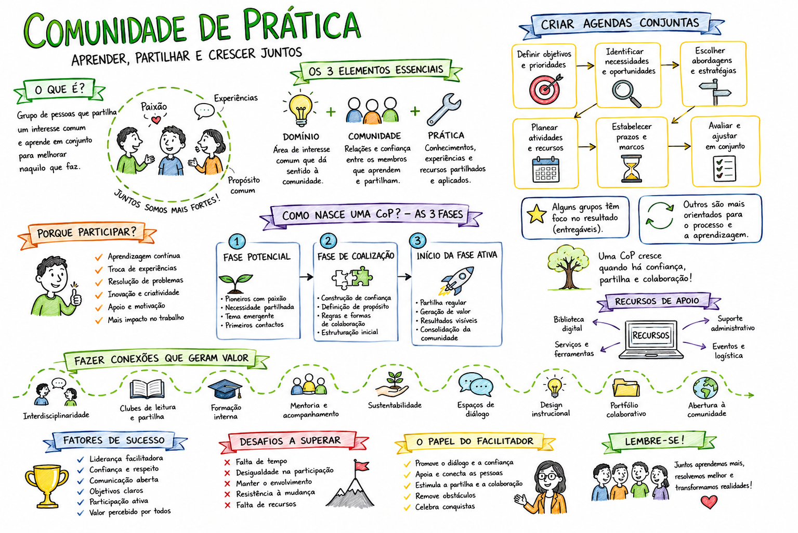

<section class="slide light" id="s11">
  <div class="slide-inner">
    <div>
      <p class="kicker">Atividade Interativa</p>
      <h2>Atividade Interativa — Quiz</h2>
    </div>
    
    <div class="quiz-layout">
      <!-- Coluna 1: Quiz Jogável Local -->
      <div class="quiz-card-left" id="quiz-playable-card">
        <!-- Injetado dinamicamente pelo JavaScript em index.html -->
        <div class="quiz-loading">A carregar o quiz...</div>
      </div>

      <!-- Coluna 2: Imagem Central 1.png -->
      <div class="quiz-image-container">
        <span class="quiz-badge-absolute">Atividade</span>
        
      </div>
      
      <!-- Coluna 3: Reflexão Pessoal -->
      <div class="quiz-ref-card">
        <div>
          <h3>Após o Quiz</h3>
          <h4 style="font-size: 1.2rem; font-weight: 800; color: var(--white);">Reflexão Pessoal</h4>
          <p class="quiz-ref-quote">
            "Identifica uma CoP de que fazes parte. Em que fase está?"
          </p>
          
          <ul class="quiz-ref-tips">
            <li><span class="quiz-ref-tip-icon">🧠</span> Pensa num grupo profissional ou de aprendizagem a que pertences.</li>
            <li><span class="quiz-ref-tip-icon">📍</span> Situa essa comunidade numa das 3 fases de nascimento de uma CoP.</li>
            <li><span class="quiz-ref-tip-icon">💬</span> Partilha a tua resposta com um colega ao lado.</li>
          </ul>
        </div>
        
        <div class="quiz-ref-info-box">
          <span style="font-size: 1rem; line-height: 1;">💡</span>
          <p>Não há respostas certas ou erradas — o importante é reconhecer a CoP e o seu momento de desenvolvimento.</p>
        </div>
      </div>
    </div>
  </div>
</section>
